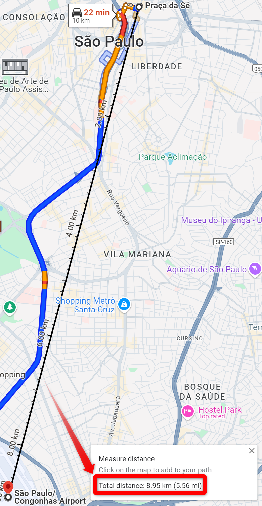

Módulos nativos#
Conforme já mencionamos na seção anterior, o Python traz uma série de módulos nativos prontos para uso. Nesta seção, vamos explorar o conceito básico de importações de módulos e alguns módulos nativos que podem ser úteis em diversas situações. Como já disse, a lista de módulos nativos é enorme, e a ideia é apenas dar um passo inicial nesse mundo. Você pode explorar a lista completa de módulos nativos na documentação oficial.
Importação de módulos#
Importando um módulo inteiro#
Diferentemente de funções nativas, módulos nativos precisam ser importados antes de serem utilizados.
A sintaxe de importação a princípio é simples:
import <nome_do_modulo_desejado>
Para isso, utilizamos a palavra-chave import seguida do nome do módulo. Por exemplo, para importar o módulo math, que contém funções matemáticas, usamos a seguinte sintaxe:
import math
Aqui estamos trazendo para o escopo do nosso programa o módulo math, que contém uma série de funcionalidades matemáticas. Como um módulo é um arquivo .py contendo uma série de funções, métodos, classes, variáveis e outras coisas, podemos acessar esses elementos utilizando a notação de ponto. Por exemplo, para acessar a função sqrt do módulo math, para calcular a raiz quadrada de um número, fazemos:
import math # (1)
print(math.sqrt(16)) # (2)
4.0
Do código acima, podemos entender as etapas:
Importamos o módulo
mathcom a palavra-chaveimporttrazendo para o escopo do nosso programa todas as funcionalidades contidas nesse módulo.Acessamos a função
sqrtdo módulomathutilizando a notação de ponto,math.sqrt().
Importando objetos específicoss#
Quando fazemos a importação do módulo inteiro com import math, estamos trazendo para o escopo do nosso programa todas as funcionalidades contidas no módulo math. No entanto, em muitos casos, não precisamos de todas as funcionalidades de um módulo, e importar o módulo inteiro pode não ser necessário. Nesses casos, podemos importar funções e variáveis específicas de um módulo ao invés de importar o módulo inteiro.
A sintaxe para importar apenas partes específicas de um módulo é a seguinte:
from <nome_do_modulo> import <nome_da_funcao_ou_variavel>
Por exemplo, para importar apenas a função sqrt do módulo math, fazemos:
from math import sqrt
print(sqrt(16))
4.0
Aqui, diferentemente do exemplo anterior, estamos importando apenas a função sqrt do módulo math. Com isso, não precisamos mais utilizar a notação de ponto para acessar a função sqrt, e podemos utilizá-la diretamente no nosso código. Se quisermos importar várias funções ou variáveis de um módulo, podemos fazer isso separando os nomes por vírgula:
from math import sqrt, pi
Neste exemplo, estamos trazendo para o escopo do nosso programa a função sqrt e a variável matemática pi do módulo math.
Caso queira acessar a documentação oficial do módulo math, você pode acessar este link. Conforme disse (e vou repetir várias vezes), a lista de módulos nativos é enorme, e a ideia é apenas dar uma visão geral sobre o conceito de módulos. Recomendo fortemente que você explore a lista completa de módulos nativos na documentação oficial.
Um pequeno desafio matemático#
Antes sequer de apresentar o desafio, vou fazer um comentário para deixar claro algo que sempre me perguntam sobre problemas reais em programação.
Programação é só uma ferramenta, um meio para resolver um problema fim. Caso você não saiba a área do problema fim (biologia, matemática, direito, medicina, finanças, RH, esporte, seja lá qual área for), de nada adianta você saber programar…
… desculpem por esse tapa na cara, mas essa é a realidade que pouquíssima gente fala (talvez porque falar a verdade não vende, sei lá, mas meu livro é meu e é de graça, então posso falar…)
Dito isso, vamos ao desafio, que envolve um pouco de geografia e matemática:
A superfície da Terra é curva, e a distância entre graus de longitude varia com a latitude. Como resultado, encontrar a distância em linha reta entre dois pontos na superfície da Terra considerando a sua curvatura é mais complicado do que simplesmente usar o teorema de Pitágoras.
Sejam (lat1, long1) e (lat2, long2) a latitude e longitude de dois pontos na superfície da Terra. A distância entre esses pontos, em linha reta, seguindo a superfície da Terra, em quilômetros (km) é:
distância = 6371.01 x arccos(sin(lat_1) x sin(lat_2) + cos(lat_1) x cos(lat_2) x cos(long_1-long_2))
O valor 6371.01 na equação anterior não foi selecionado aleatoriamente. É o raio médio da Terra em quilômetros.
Crie um programa que exiba a distância entre os pontos dados, seguindo a superfície da terra, em quilômetros.
Dica (radianos)
As funções trigonométricas do Python operam em radianos. Como resultado, você precisará converter as coordenadas de graus para radianos antes de calcular a distância com a fórmula discutida anteriormente. O módulo
mathcontém uma função chamada radians que converte de graus para radianos.
Este é um problema real! Depois da resolução, vou mostrar que o Google Maps mostra exatamente a mesma distância entre dois pontos que o nosso programa. Vamos lá!
import math
def calcular_distancia(lat1, lon1, lat2, lon2):
# Converter graus para radianos
lat1, lon1, lat2, lon2 = map(math.radians, [lat1, lon1, lat2, lon2])
distancia = 6371.01 * math.acos(
math.sin(lat1) * math.sin(lat2)
+ math.cos(lat1) * math.cos(lat2) * math.cos(lon1 - lon2)
)
return distancia
# ponto 1: coordenadas da praça da Sé em São Paulo capturadas usando Google Maps
lat_praca_da_se = -23.550305025464485
lon_praca_da_se = -46.634182529683606
# ponto 2: coordenadas do aeroporto de Congonhas em São Paulo capturadas usando Google Maps
lat_aeroporto_congonhas = -23.627975178268755
long_aeroporto_congonhas = -46.65714724537711
distancia = calcular_distancia(
lat_praca_da_se, lon_praca_da_se, lat_aeroporto_congonhas, long_aeroporto_congonhas
)
print(f"A distância em linha reta entre os dois pontos dados é de {distancia:.2f} km")
A distância em linha reta entre os dois pontos dados é de 8.95 km
Vejam no print abaixo que a distância do nosso programa é exatamente a mesma do Google Maps.
{kind=link}
Nota (distância em linha reta!)
Apesar de aparecer no print a distância do trajeto de carro de 10 km, o que calculamos é a distância em linha reta entre dois pontos na superfície da Terra considerando sua curvatura.
Outros módulos nativos#
A ideia desta seção é fornecer uma visão geral sobre alguns outros módulos nativos mais usados e pra que eles servem. É possível consultar a documentação oficial de cada um deles pra se aprofundar mais. Os módulos mais comumnente utilizados, na minha visão, são:
os: funções para interagir com o sistema operacional, permitindo manipulação de arquivos, diretórios e variáveis de ambiente do sistema operacional.sys: acesso a variáveis e funções que interagem com o interpretador Python.math: funções matemáticas comuns, como operações trigonométricas, exponenciais, logaritmos e arredondamentos.datetime: ajuda a trabalhar com datas e horários, permitindo calcular diferenças entre dias, formatar datas, etc.random: gera números aleatórios e permite realizar operações como escolher itens aleatórios de uma lista ou embaralhar sequências.re: fornece suporte para expressões regulares, permitindo busca, correspondência e substituição de padrões em strings.collections: contém outras estruturas de dados mais especializadas, comonamedtuple,deque,Counteredefaultdict, que ampliam as funcionalidades das estruturas de dados padrão.itertools: ferramentas eficientes para iteração e combinações, como contagem, agrupamento, arranjos e permutações.functools: funções para trabalhar com outras funções, comoreduce,partialelru_cache, que ajudam na composição e otimização de funções.statistics: funções com cálculos estatísticos como média, mediana, variância, desvio padrão, dentre outros.
Existem centenas de outros módulos nativos, e abaixo estão mais alguns menos comuns, mas que podem ser úteis em situações específicas:
sched: um agendador simples para executar tarefas em horários específicos ou após determinados intervalos de tempo.pprint: formata e imprime dados de maneira bonita e legível, útil ao depurar ou exibir estruturas complexas como listas ou dicionários aninhados.fractions: lida com números fracionários de forma precisa, permitindo operações matemáticas sem perda de precisão.secrets: gera números e tokens aleatórios seguros, usados para criptografia ou autenticação segura.
… e a lista continua. Eu realmente encorajo você a pesquisar e explorar a documentação oficial para descobrir mais sobre os módulos nativos do Python.
Prática#
É hora de você colocar a mão na massa pra explorar por conta própria os módulos nativos do Python. Sugiro fazer o exercício 16, que na verdade é uma série de exercícios que envolvem a utilização de módulos nativos. Explore a documentação oficial, faça pesquisas na internet e pratique bastante! Se precisar de ajuda pode contar comigo!
Conclusão#
Ao longo deste capítulo, você aprendeu sobre módulos nativos do Python, que são arquivos .py contendo funções, métodos, classes, variáveis e outras coisas. Aprendeu também como importar módulos nativos, como importar funções e variáveis específicas de um módulo, e explorou alguns módulos nativos mais comuns e suas funcionalidades. Você foi capaz de praticar o que aprendeu com o exercício proposto e agora está mais preparado para explorar o vasto mundo dos módulos nativos do Python. Parabéns!
Na próxima seção, vamos explorar o conceito de módulos próprios pra que você possa criar seus próprios módulos e reutilizar código em diferentes partes do seu programa. É um conceito fundamenal para organizar melhor seu código e começar a crescer os seus projetos! Vamos lá?